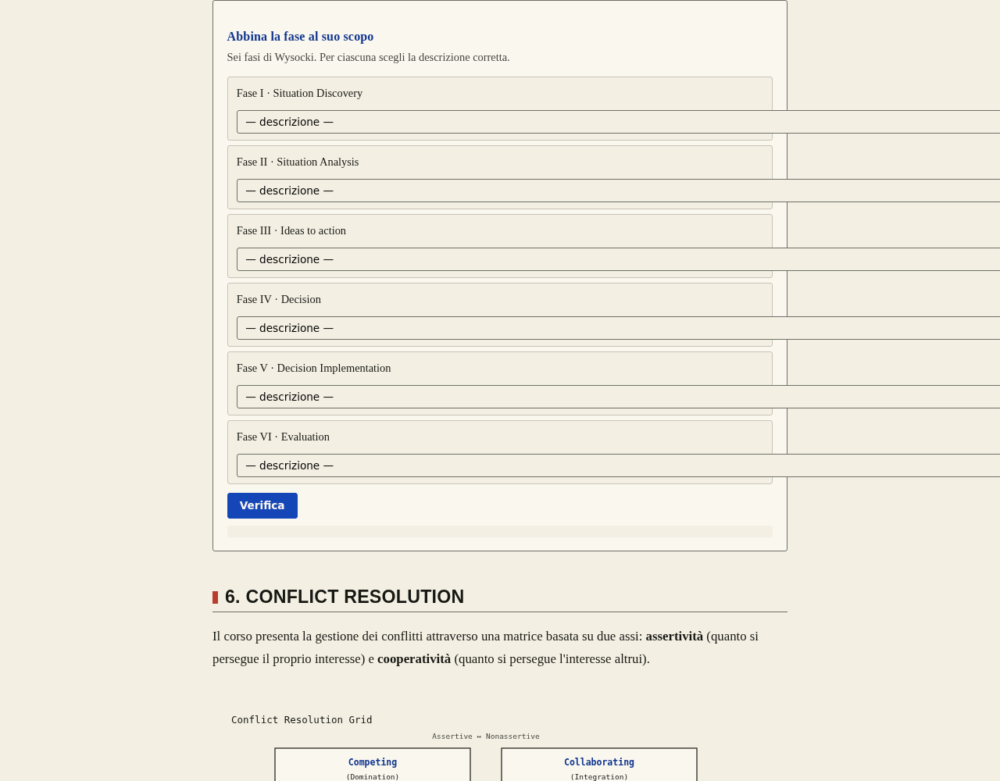
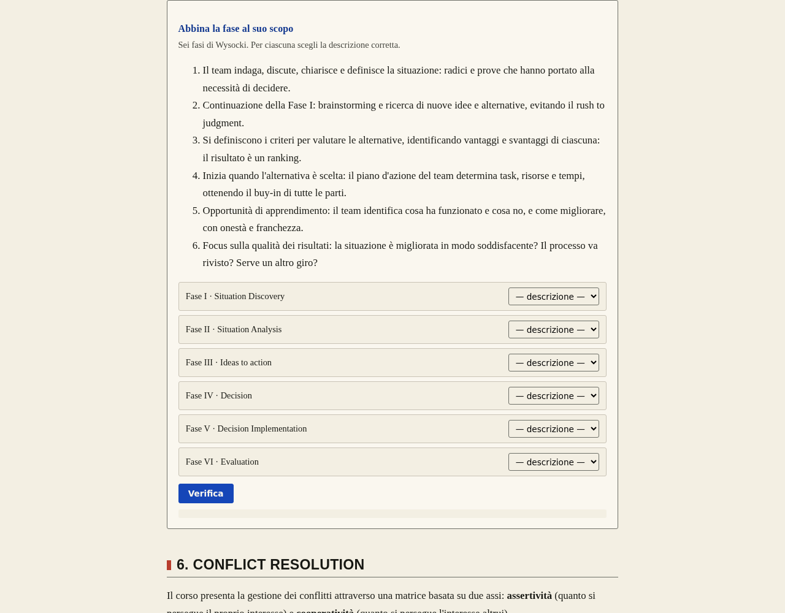

CONTENT LAYOUT · VERIFIED PREVIEW
315 pages / 630 desktop-mobile visits: 178 page-overflow cases before, 0 after. This is a reflow result, not a full scientific or legacy-diagram certification. Verification and remaining work.
PM: full descriptions and concise matching controls
Open current chapter
Before
After